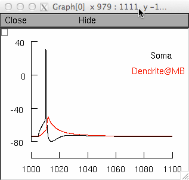
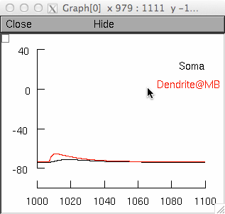
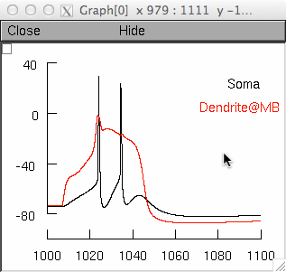
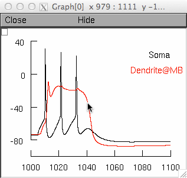

This is the readme for the model associated with the paper:
Schaefer AT, Larkum ME, Sakmann B, Roth A (2003) Coincidence detection
in pyramidal neurons is tuned by their dendritic branching pattern.
J Neurophysiol 89:3143-54
THese model files were supplied by Dr A.T. Schaefer.
- NOTE: Tested by now (4/03) only in a Unix environment, known
difficulties in space plot presentation with some Windows versions
Proceed as follows:
- compile mod files (cd mod;nrnivmodl;cd ..;)
warning messaged might appear; a file "special" is created
- run the demo:
mod/special BACModel.hoc -
- stimuli are applied by executing the according panel buttons which
replicate Fig 2A in the paper.
Clicking on Backpropagating AP will display

Clicking on EPSP:

Clicking on Ca spike:

Clicking on BAC firing:

Note:
- the internal calcium concentration as shown by the bottom left
space plot is calculated in the absence of any buffering; thus
values are given in arbitrary units
- best visual presentation is achieved with a black background;
(which implies changing NEURON parameter files accordingly)
- the axon might not be visible due to the small size
- stimuli are set to be at "threshold", slightly (100-200 pA) smaller
curent injection will also yield "regenerative events" that are
however delayed in the case of the Na spike and "creeping and
late" in the case of the Ca spike / BAC-firing
- the model was constructed to equally well reproduce BAC firing in a
whole class of Layer 5 pyramidal neurons and allow comparison; it
was not designed to incorporate all measurements of channel
properties (thus e.g. the lack of Ih)
Best Wishes
Andreas Schaefer
andreas.schaefer at crick.ac.uk
Changelog
---------
2022-02-28: updated for C++ compatibility (NEURON 9+)